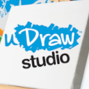

 uDraw Studio
Details
 |
|
| Playtime | Not Played |
| Last Activity | Never |
| Added | 4/29/2025 6:57:43 |
| Modified | 4/29/2025 23:35:18 |
| Completion Status | Not Played |
| Library | Playnite |
| Source | |
| Platform | Nintendo Wii |
| Release Date | 11/14/2010 |
| Community Score | 66 |
| Critic Score | 88 |
| User Score | |
| Genre | Art |
| Developer | Pipeworks Software |
| Publisher | THQ |
| Feature | Coloring Pages Painting |
| Links | Wikipedia |
| Tag | |
Description
uDraw Studio is an art game for Wii which is bundled with the uDraw GameTablet and is the main game in the uDraw series. The game was published by THQ, developed by Pipeworks Software, and released in North America on November 14, 2010, February 24, 2011 in Australia and in Europe on March 4, 2011. It lets players create their own paintings or color in coloring pages and save them to their gallery using the uDraw GameTablet bundled with the game. A sequel to the game, uDraw Studio Instant Artist, was released for Wii, PlayStation 3, and Xbox 360 with and without bundles in North America on November 15, 2011, November 17, 2011 in Australia and in Europe on November 18, 2011.
Gameplay
Every uDraw game requires the uDraw GameTablet which is bundled with the software.
In Paint Mode, players can create original paintings by choosing a canvas, colors, paint size, and stamps. Effects include faded painting, flipping, black and white, negative, neon, sharpen, and glow. Paintings can be saved, snapshotted, or replayed.
In Coloring Book Mode, players can color in Coloring Pages by genre. Tools are the same as the Paint Mode and pages can also be saved into the Gallery.
Reception
In August 2010 at the announcement of uDraw, analysts predict that it could "sell up to one million units", with the potential to be a sleeper hit during the 2010 holiday season. THQ also showcased it at GamesCom 2010, and reviewers noted that the clean user interface and simple design "makes it accessible to the widest audience possible".[citation needed]
Joystiq said that the GameTablet's "simple mostly-white design makes it a perfect companion for the Wii", and that the replay function is a cool feature: "In the hands of a capable artist, this will undoubtedly make for some mesmerizing videos." USA Today said that "navigating with the stylus feels easy", and both the tablet and stylus handled coloring and stroke move well.
The game received average reviews, with a GameRankings score of 66.50% based on 4 Reviews including Cubed3 with a score of 7/10, Games Master UK with a score of 71/100, NGamer UK with of score of 65/100, and Nintendo World Report with a score of 6/10. Nintendo World Report rated the game 6 of 10, stating "With their new game tablet, THQ's looking to add a layer of interaction to the Wii, have they succeeded?". Common Sense Media rated the game 4/5 and an On Rating for ages 6 and up, stating "Lets you use Wii to make art, but there's a learning curve."